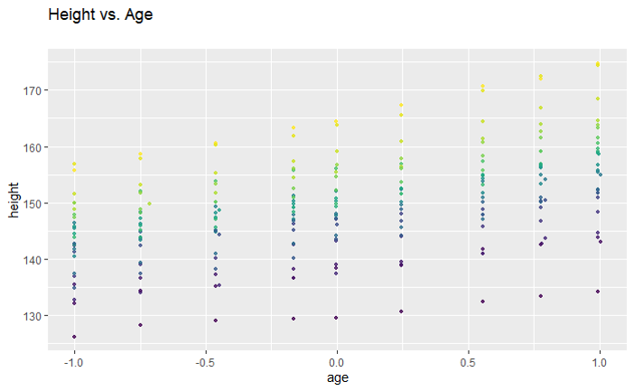
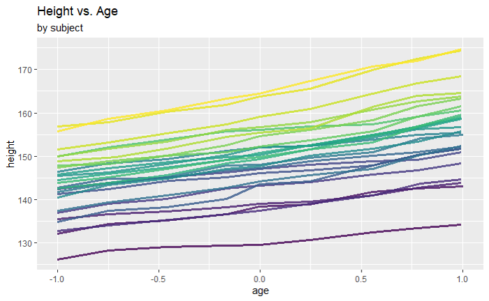
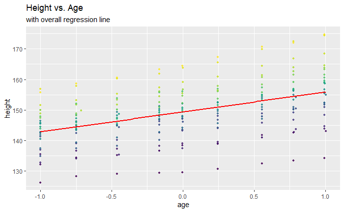
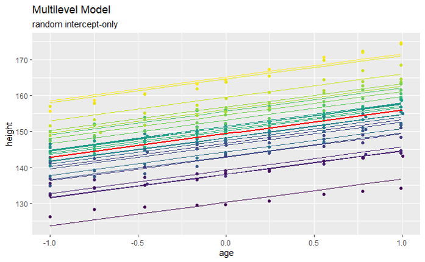

Here, we consider repeated measurements on individuals taken over time. It is intuitively clear that measurements pertaining to a certain individual will exhibit larger correlation than measurements from different individuals.
This “within-individual-correlation" can again be dealt with by two-level models; but now
The upper level corresponds to individuals.
The lower level corresponds to repeated measurements on individuals.
Example 1: Oxford Boys data
This data set contains measurements on the height (in cm) of 26 boys from Oxford, England versus age. Age is measured on a standardized and dimensionless scale with nine possible values, yielding a total of 234 observations.
 
Data structures
For traditional analysis, for software such as SPSS or Excel, repeated measures data are often presented in “wide format”, with a single row of the data frame containing multiple measurements (e.g. heights at different ages). The wide format is impractical for “modern” multilevel modelling, where we need a data frame with one row per measurement, known as the long format. For example:
head(Oxboys)
## Grouped Data: height ~ age | Subject
## Subject age height Occasion
## 1 1 -1.0000 140.5 1
## 2 1 -0.7479 143.4 2
## 3 1 -0.4630 144.8 3
## 4 1 -0.1643 147.1 4
## 5 1 -0.0027 147.7 5
## 6 1 0.2466 150.2 6
dim(Oxboys)
## [1] 234 5This format is directly usable in multilevel R functions such as lmer, and allows very straightforward handling of missing values.
The following two plots give fitted models that ignore group structure (left) and account for it using a random intercept model (right). The required R code for fitting is:
## Ignore group structure
fit1 <- lm(height ~ age, data=Oxboys)
## Random intercept model
fit2 <- lmer(height ~ age + (1 | Subject), data=Oxboys) 
Denote by \(y_{ti}\) the \(t\)-th measurement for individual \(i\), and \(T_{ti}\) the time stamp of (which can be measured in continuous or discrete time, or in form of some type of age measurement). Consider the following model: \[y_{ti}=a_i + b_i T_{ti} + \epsilon_{ti},\qquad \epsilon_{ti}\sim N(0,\sigma^2)\] where, for individual \(i\) \[\begin{aligned} a_i &= a + u_i, \qquad u_i\sim N(0,\sigma^2_u),\\ b_i &= b + v_i, \qquad v_i\sim N(0,\sigma^2_v).\end{aligned}\] We recognise that this is just the same as the two-level model from Lecture 4!
Adding covariates
There may be other covariates, \(x_{ti}\), beyond “time", specifically, including
a lower-level covariate \(x_{ti}\),
an upper (subject)-level covariate \(z_i\).
Hence, the model becomes \[y_{ti}=a_i + b_i T_{ti} + c_i x_{ti} +\epsilon_{ti},\qquad \epsilon_{ti}\sim N(0,\sigma^2)\] where, for individual \(i\) \[\begin{aligned} a_i &= a + \alpha z_i + u_i, \qquad u_i\sim N(0,\sigma^2_u),\\ b_i &= b + \beta z_i + v_i, \qquad v_i\sim N(0,\sigma^2_v),\\ c_i &= c + \gamma z_i + w_i, \qquad w_i\sim N(0,\sigma^2_w).\end{aligned}\]
Remarks:
Substituting the level 2 expressions for \(a_i\), \(b_i\) and \(c_i\) into the level 1 equation gives \[y_{ti} = a + \alpha z_i + u_i + bT_{ti} +\beta z_i T_{ti} +v_i T_{ti} + c x_{ti}+\gamma z_i T_{ti} +w_i x_{ti} +\epsilon_{ti}.\]
We see the cross-level interactions \(\beta z_i T_{ti}\) and \(\gamma z_i T_{ti}\). These will be explored with an example.
There may be good reasons to justify such a model, but in practice one will often seek to simplify the model.
Example 2: College student GPA data
We consider a data set consisting of longitudinal observations from 200 college students (\(i=1,\ldots,200\)) over six semesters (\(t=1,\ldots,6\)).
The response variable is Grade Point average \(y_{ti}=gpa_{ti}\) of student \(i\) in semester \(t\).
The predictor variables (covariates) are Hours worked per day, \(x_{ti}=job_{ti}\), by student \(i\) in semester \(t\) and gender \(z_i=gend_i\) of student \(i\) (0=male, 1=female).
The Time variable (“measurement occasion") is given by \(T_{ti}=occas_{ti}=t-1\).
The data are plotted below.
We perform the following analysis.
Intra-class correlation
We begin by calculating the intra-class correlation to assess whether or not group structure should be accounted for. We therefore fit the empty model via:
lfit0 <- lmer(formula = gpa ~ 1 + (1|student),data = gpa.data)
summary(lfit0)
##
## Random effects:
## Groups Name Variance Std.Dev.
## student (Intercept) 0.05714 0.2390
## Residual 0.09759 0.3124
## Number of obs: 1200, groups: student, 200
##
rho0= 0.05714/(0.05714+0.09759)
rho0
## [1] 0.3692884for which we see that \(\pho=0.37\). About one third of the variance of the GPA measures is variance between individuals, and about two thirds is variance within individuals across time.
Model fitting
Let’s begin with the full model including the cross-level interactions:
lfit1 <- lmer(gpa ~ occas + job + gend + job:gend + occas:gend +
(1 + occas + job | student), data=gpa.data)The notation job:gend represents the term of \(\gamma z_i x_{ti}\), and occas:gend represents \(\beta z_i T_{ti}\). DO we need these terms in the model?
round(summary(lfit1)$coef, digits=4)
## Estimate Std. Error df t value Pr(>|t|)
## (Intercept) 2.9110 0.0593 376.8731 49.0640 0.0000
## occas 0.0852 0.0079 195.2881 10.8429 0.0000
## job -0.1604 0.0238 610.9215 -6.7341 0.0000
## gend -0.0318 0.0853 446.8028 -0.3727 0.7095
## job:gend 0.0457 0.0351 650.8235 1.3023 0.1933
## occas:gend 0.0309 0.0108 195.1070 2.8506 0.0048The above table suggests that the job:gend interaction is not needed, but we should retain \(\beta z_i T_{ti}\) in the model. The interpretation is that:
The impact of the number of hours worked on the GPA does not depend on gender.
The impact of the semester on the GPA does depend on gender.
We now check to see if random slopes are needed via ranova(lfit1) which performs a likelihood ratio test for single term deletions of the random slopes. The (abbreviated) output we need is:
## Pr(>Chisq)
## <none>
## occas in (1 + occas + job | student) < 2e-16 ***
## job in (1 + occas + job | student) 0.09782 . We see that the random effect term for job is not needed (\(p>0.05\)).
Hence, an appropriate model (after simplification) is: \[y_{ti}=a_i + b_i T_{ti} + c_i x_{ti} + \epsilon_{ti}\] where \[\begin{aligned} a_i &= a + \alpha z_i + u_i, \qquad u_i\sim N(0,\sigma^2_u),\\ b_i &= b + \beta z_i + v_i, \qquad v_i\sim N(0,\sigma^2_v),\\ c_i &= c .\end{aligned}\] Equivalently, \[y_{ti} = a + \alpha z_i + u_i + bT_{ti} +\beta z_i T_{ti} +v_i T_{ti} + c x_{ti} +\epsilon_{ti}.\]
Refitting the simplified model
After removing the two unnecessary terms, we fit the resulting model with:
lfit2 <- lmer(gpa ~ occas + job+ gend + occas:gend +
(occas | student), data=gpa.data)which can be achieved with the equivalent code:
lfit2 <- lmer(gpa ~ occas*gend + job+ (occas | student), data=gpa.data)We summarise the output of the model fit as follows.
summary(lfit2)
## Random effects:
## Groups Name Variance Std.Dev. Corr
## student (Intercept) 0.041347 0.20334
## occas 0.003676 0.06063 -0.19
## Residual 0.041597 0.20395
## Number of obs: 1200, groups: student, 200
##
## Fixed effects:
## Estimate Std. Error df t value Pr(>|t|)
## (Intercept) 2.849e+00 4.582e-02 9.193e+02 62.177 < 2e-16 ***
## occas 8.783e-02 7.994e-03 1.967e+02 10.987 < 2e-16 ***
## job -1.321e-01 1.727e-02 1.035e+03 -7.648 4.65e-14 ***
## gend 6.790e-02 3.559e-02 1.979e+02 1.908 0.05787 .
## occas:gend 2.956e-02 1.102e-02 1.957e+02 2.683 0.00791 **Note: The fixed effects slope for gend is not significant at the 5% level, but usually we would not remove a main effect (gend) when keeping an interaction effect involving it (occas:gend).
Interpretation
The fitted model is \[\begin{aligned} y_{ti} &= a + \alpha z_i + u_i + bT_{ti} +\beta z_i T_{ti} +v_i T_{ti} + c x_{ti} +\epsilon_{ti}\\ &=2.849+0.068 gend_i + 0.088 occas_{ti} - 0.132 job_{ti} + 0.029 gend_i occas_{ti} +u_i +v_i occas_{ti} +\epsilon_{ti}\end{aligned}\] where \(u_i\sim N(0, 0.041)\), \(v_i\sim N(0,0.0037)\) and \(\epsilon_{ti}\sim N(0, 0.042)\).
The expected GPA is 0.068 higher for female than for male students.
The expected GPA decreases by 0.132 for each hour worked.
For male students, the expected GPA increases by 0.088 each term.
For female students, the expected GPA increases by \(0.088+0.029=0.117\) each term.
The above analysis is an example of a top-down approach to model fitting. There are three widely used approaches that we summarise here.
Bottom-up
Fit the empty model (without covariates, only group-level random intercept). Compute ICC.
Include lower-level explanatory variables.
Include higher-level explanatory variables.
Include random coefficients.
Add cross-level interactions.
Top-down
Compute the full two-level model including all random effects and cross-level interactions.
Remove irrelevant cross-level interactions.
Remove irrelevant random slopes.
Remove irrelevant higher level covariates.
Remove irrelevant lower level covariates.
Halfway-in
Carry out an explanatory analysis of the data (may include ICC).
Based on this, fit a suitable base model, for instance including the identified fixed effects and a group level intercept.
Inspect fitted model, carry out some diagnostics. Simplify or expand model as appropriate.
Irrespective of the approach taken, at each step we make appropriate checks for significance/relevance of terms.